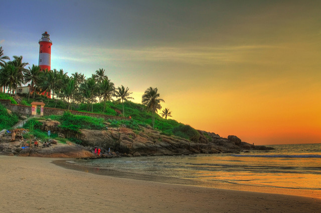
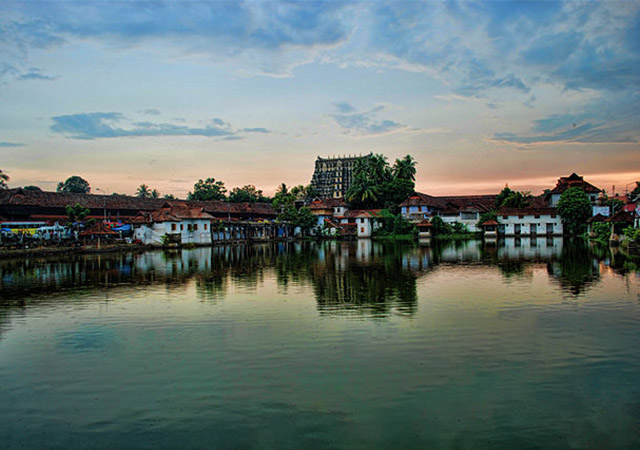
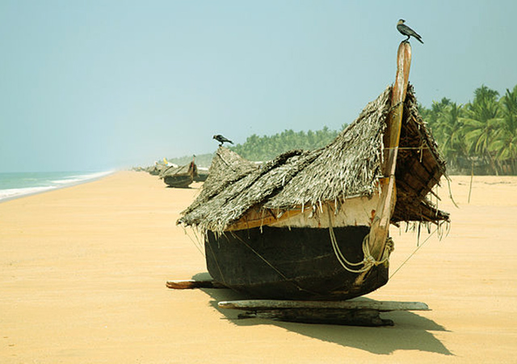
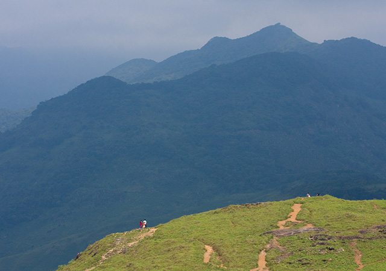
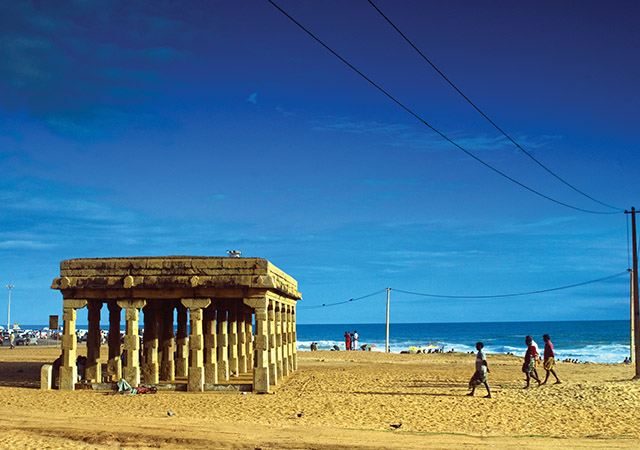

The capital city of Kerala, Thiruvananthapuram or Trivandrum is an appealing blend of a strongly rooted heritage and a nostalgic colonial legacy. Built upon seven hills, this city has long since left the days when it was only used by seafaring explorers behind - today, Trivandrum is a swanky metropolis with quaint urban charm and plenty of scenic places to visit. Proudly retaining its age-old cultural charm, Trivandrum offers a huge variety of sights including incredible museums, beautifully designed palaces, sacred temples and mesmerizing beaches, making the city one of the best tourist spots in South India.
1.Kovalam Beach
Of course, the captivating beauty of the setting sunset is the highlight here. But the absolutely beautiful Kovalam beach lures tourists for more reasons than one. The stunning lighthouse, the undisturbed coastline and the palm-fringed shallow beach, all together make Kovalam a must-see destination. The enchanting sky hues reflecting against the hurried waves beneath is a treat in itself. The artificial off-shore coral reef, the first of its kind in the country, attracts both elders and kids alike.

2.Padmanabhaswamy Temple
The temple is known for its architectural marvel in stone and bronze as well. Brilliant mural sketches adorn the interiors. While moving around the temple, do not miss the famous corridor supported by three hundred sixty-five and a quarter pillars, all made of granite. You need to see it to believe the architectural splendor and craftsmanship that has gone into its making.Kuthiramalika Palace, situated close to Sree Padmanabhaswamy temple is also worth visiting. The interiors are decorated with wooden carvings and mural paintings. The other exhibits at the palace include armory, idols, sculptures, jewellery etc used by the Kings of Travancore.

3.Poovar
If a quiet holiday on a pristine beach is what you are looking for, no better place than Poovar. A rare meeting point of lake, river and sea, this serene village is situated to the south of River Neyyar. Poovar beach separates the river from the Arabian Sea and hence its geographical importance. Poovar is relatively unexplored and thereby beach activities are minimal. The boat trip through the lagoon, enjoying the lush greenery on both sides, is an added attraction.

4.Ponmudi
As the name ‘Ponmudi’ indicates, this hill resort is indeed a golden crown in Kerala’s tourism map. The site of the lush green environs as you drive up the hairpin bends is indeed refreshing. Streams, tea bushes, mountain flowers and big wild butterflies add beauty to the misty trekking trail. Ponmudi is a quickly developing spot for adventure tourism, with quite many cottages fast mushrooming in near vicinity.

5.Shanghumukham Beach
A secluded beach, far away from the hassles of the city is what Shanghumukham has to offer. It is an ideal getaway destination with silvery white sand and calm sea. The gigantic statue of mermaid popularly called as ‘Jalakanyaka’ is the landmark of Shanghumugham beach.
